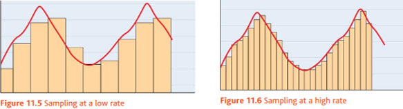

ASCII
Extended ASCII
Unicode
Boolean
Integers
Hexadecimal
Number Conversion
Images
Audio
Meta Data
ASCII was developed to give common ground for all computers to use the same character set. Before ASCII, moving data between computers was difficult as they had different character sets.
If computers are using different character sets, then the binary code for each symbol will be different from computer to computer and therefore one document on one computer would be completely different on another computer. Now using ASCCI all computers have the same character set and data can be moved without trouble.
ASCII consists of 128 different symbols or functions all contained within 7 bits.
Extended ASCII is just the same as ASCII but with one extra bit. With the now 8-bit code, there are another 128 combinations that can be made therefore allowing 128 more symbols. This was created due to standard ASCII only involving characters from the english language and therefore multi-lingual computers were rare. With the extra 128 combinations, more languages were made available.
Unicode much like Extended ASCII is just the same as ASCII but has unlimited bits this time. Unilmited bits now means unlimited combinations and unlimited symbols. This has allowed for things such as emojis to be available on computers for general use.
This is where the output is only either True or False and therefore this data type only needs one bit as that bit can only be on or off.
This can be useful when doing something line programming a light to flash as that would only have 2 settings of on or off.
Integers are stored differently to the actual number symbols. In a calculation, rather than using the binary code for the symbol and adding that to another symbol, the actual binary number system is used instead. So instead of 1 being 00110001, it would be 00000001 as that is it's binary value.
This is useful as when performing calculations because if the symbols were used then there would only be 10 symbols avaiulable to use (0-9) whereas using binary, all numbers are available to be used.
Hexadecimal is another number system much like denary or binary. Hex is base 16, binary is base 2 and denary is base 10. This refers to how many characters they have to use, denary has 1-9 binary has 0 and 1 but hex uses 1-F.
As there are only 10 number symbols, hex uses letters for the numbers 10-15, therfore the symbols are ordered:0123456789ABCDEF. As it is very easy to convert between binary and hex, it is commonly used as a shorthand way of writing binary as it takes up much less room.
To convert from decimal to binary you would lay out the columns for a binary number, divide the decimal number by 2 and the remainder would become the LSB. This would be continued until the number is 0.
To convert from binary to deciaml, if there is a 1 in the column of the binary number then you would add the value of that column to the denary number
To convert a hex number to denary you would times the value of each hex column by the symbol in that column and add the result. For exampole in the case of 9F you would do: (9*16)+(1*15)
To convert from Denary to hex you would divide the denary number by 16 and the remainder would become the LSB, this would be repeted until the denary number is 0
To convert binary to hex you would split the binary jnumber into nibbles (4 bits) and then find the hex value of each nibble individually
Bitmap images are made up of individual pixels that each have their own binary to dictate the colour. The individual pixels are the reason why bitmap images look pixelated when they are streached out. Bitmap images can be compressed by just removing pixels or by lowering the Colour Depth.
Vector images work by having each pixel have it's own fromula. This formula dictates how many pixels that one colour should spread accross. This allows the image to be stretched without ever looking distorted. However this means that the image files cannot be compressed as each pixel is a formula and the formula cannot be changed. They can still be compressed by lowering the Colour Depth.
The Colour Depth of the image says how many bits there are in each pixel, more bits means more combinations means more colours.
Audio files are made by taking samples of the sound at a regular rate, how often the samples are taken is caled the Sample Rate.
The Bit Rate is how many bits are assigned to each sample. Much like colour depth, more bits means more combinations means more tones.
The Meta Data of a file is the information that comes with a file.
It includes things such as: Resolution; Hight; Width; Colour Depth; Bit Rate; Sample Rate.